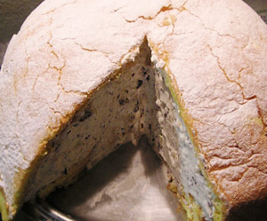

Zuccotto
5,5 von 6biskuit:
ofen auf 175 grad vorheizen. fünf eigelb, 120 g puderzucker und 1 el vanillezucker schaumig rühren. 5 eiweiss sehr steif schlagen und unter die masse ziehen. 50g maizena und 50 g mehl dazugeben und gut mischen. ein grosses blech mit backpapier belegen und die masse darauf verteilen. 15 min. backen, auf ein brett stürzen und auskühlen lassen.
füllung:
200 g dunkle schokolade und ca. 100 g geschälte mandeln fein hacken. 1 liter rahm steifschalgen und mit den mandeln/schokoladen stücke mischen.
eine grosse runde schüssel mit dem biscuit auskleiden und mit je 2 cl weinbrand und amaretto beträufeln. genügend biskuit für den boden beiseite stellen. nun die masse einfüllen und mit dem boden bedecken. mind. 4 stunden kühlstellen. stürzen und mit puderzucker bestreuen.
